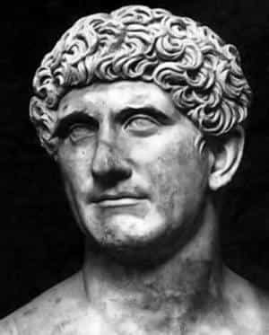
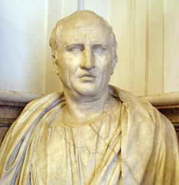

Michael is the author of Staying Married in a Degenerate Age. Follow him on Twitter or Facebook. You can read more of his writing at Honor and Daring.


One of the best ways to improve your own life is to study the lives of the great men of the past. By emulating their virtues, we can accomplish mighty works. But an equally profitable study is to examine the lives of great, or nearly great, men who failed so that we can avoid making the same mistakes.
By looking at his resume, any unbiased person would conclude that Mitt Romney had what it takes to succeed. He was born to a wealthy, powerful family. His father was an automobile exec and later became governor of Michigan at a time when that state was still a manufacturing powerhouse. Romney attended Harvard where he received a joint J.D./M.B.A. His resume also includes starting a highly profitable investing firm and serving as governor of Massachusetts. But to me, his most impressive achievement was assuming leadership of a failing Salt Lake City Olympics and turning it into a success.
Not only was Romney a success at politics and business, but he is also a man of deep faith and strong morals. He is still married to his high school sweetheart, and he is a longtime leader in his Mormon faith. Fit, handsome, smart, and highly trained, Romney’s background should have prepared him to become a new type of American nobility. Yet Romney blew it all because of weakness.
When Romney was running against President Obama in 2012, it looked like Romney would be the easy winner. The US economy was doing poorly, having experienced the slowest recovery of any recession. Race relations were degenerating thanks to the Obama’s administration’s policy of fanning the flame of every racial incident. And the world was a mess due to Obama’s inability to understand any problem that doesn’t involve white on black racism.
Romney got off to a good start. In the first debate he showed that he was sharper and had a better grasp of facts and policy than Obama. The debate was a clear win for Romney and he saw his poll numbers rise because of it. Obama worshipping liberals were on the verge of suicide having seen their idol humiliated. Romney only had to repeat his performance in the next two debates and he would have sealed the deal.
But Romney let weakness get in the way. For some reason he decided to hang back in the next two debates and let Obama pound him. Obama’s attacks went unanswered and Romney lobbed few of his own. The media joyfully declared Obama the winner of the last two debates and Obama went on to win the election by a large margin.
Romney also exhibited weakness in the run-up to the 2016 election. Romney reportedly wanted to run but he learned that Jeb Bush has already gained the support of most of the large donors. Rather than try to run an unconventional campaign that appealed directly to Republican voters, he tucked his tail between his legs and yielded to Jeb who was later destroyed by Donald Trump. Romney continued his losing streak by his last ditch effort to stop the Trump nomination by a long speech arguing that Trump was immoral.
Romney’s weakness stems from his over reliance on “experts” and a lack of boldness. It was experts who advised Romney to soften his tone in the debates as that would have stoked sympathy for Obama. It was experts that told Romney that it was impossible to win an election without the backing of big donors. To avoid Romney’s weaknesses, consult experts but trust your gut. Bold action often wins even when the odds are against you.

The weakness of Mitt Romney kept him from achieving true greatness. Our next example achieved greatness, but then let weakness destroy him. Mark Antony was a Roman politician and general. He didn’t have the best childhood. He came from a plebian family and Plutarch tells us that his father was incompetent. Antony’s youth was spent drinking, gambling, and chasing girls. He accrued such an enormous debt that he had to flee Rome to escape his creditors. Luckily for him, he made the wise decision to move to Athens to study philosophy and rhetoric—a skill that would later serve him well in politics.
After a year of study, Antony enrolled in the military under Aulus Gabinius, the Proconsul of Syria. As part of this service, Antony participated in a campaign in Egypt where he met the 14-year-old daughter of King Ptolemy XII—Cleopatra. The princess must have been something special because Antony was instantly smitten and remained so for the rest of his life.
Antony’s excellent service eventually got him a position with Julius Caesar, with whom he formed a life-long friendship. Antony benefited from Caesar’s goodwill. Caesar appointed him to the College of Augurs, a religious position that granted Antony prominence in Rome. This led to Antony to the office of Tribune in the Senate.
After Caesar was assassinated, Antony made an alliance with Octavian, Caesar’s adopted son, and Lepidus, another Caesar ally to form a triumvirate—a dictatorship by three men that was supposed to last for five years. The three men divided the Empire between them with Antony receiving the largest share. As part of this division, Antony received Rome’s eastern vassal states, including Egypt.
At the time, Egypt was being ruled by Cleopatra. Antony summoned her, ostensibly to cement Rome’s alliance with Egypt and to proclaim Caesarion, Julius Caesar’s son by Cleopatra, to be king of Egypt. Of course, Cleopatra used the meeting to seduce Antony who fell completely in her thrall.
Cleopatra and Antony started a torrid love affair. Cleopatra was a brilliant strategist and she used Antony to eliminate her political enemies. Unfortunately, because Antony was away from Rome, it allowed Octavian to stir up the Roman public against Antony. The Romans began to think that Antony had more loyalty to a foreign power than he did to Rome.
Cleopatra wasn’t an Egyptian. She was a Greek, like this girl.
Antony was so bewitched by Cleopatra’s charms that he made a critical error: He declared her son Caesarion to not only be king of Egypt but also Caesar’s rightful heir. This was a direct attack on Octavian’s claim to authority. Octavian used it as pretext to attack Antony and Cleopatra.
At one point during the battle, Antony came to believe that Cleopatra had been killed by Roman forces. In true omega male fashion, Antony committed suicide by stabbing himself. As he lay dying, he found out that Cleopatra was alive after all.
Unlike the biblical King David who allowed lust to drive him to make bad decisions, Antony’s weakness was that he let the woman he loved dominate him completely even to the point where he did stupid things that destroyed both of them.

The final example is another great man who was ultimately undone by his weakness. Marcus Tullius Cicero was a Roman lawyer, philosopher, orator, and statesman who was a contemporary of Mark Antony. It would not be an exaggeration to say that Cicero’s excellent prose indirectly influences writers to the present day. But the biggest gem for modern men is his practical philosophy. I’ve been reading Quintus Curtius’ masterful translation of Cicero’s On Duties, and I can attest to its usefulness in daily life.
Cicero lived at a time of great change in Roman politics. The old Republic was governed by two consuls who were elected by the citizens and advised by the Senate, which was appointed. But the Republic was dying. While there were many factors for its decline a significant reason was that voters had figured out how to get free stuff from the political system—in the case of the Republic it involved taking away land from the aristocrats and distributing it to the plebs. This led to chaos within the Republic.
The only hope for an effective government to restore order was a dictatorship. Julius Caesar was one of the first of these dictators. After his assassination, this role was assumed by the triumvirate of Antony, Octavian, and Lepidus. One of Cicero’s weaknesses was that he was unable to discern that times had changed. He was still attached to the old Republic and its unwritten constitution. In a way, Cicero was like the “true conservatives” of today who stubbornly hold erroneous ideas that undermine there own opportunity to assume power.
Cicero had an aversion to the dictatorship because he saw it as the demise of his beloved Republic. He opposed Julius and he later opposed the triumvirate, especially Antony. He set off to write and speak in the Senate against Antony. During the course of a year he delivered 14 speeches, entitled the Philippics, condemning Antony.
Here we see another weakness of Cicero: He didn’t know when to quit. There is a time and a place for criticism and there is a time for keeping one’s mouth shut. Cicero’s tirades earned Antony’s ire, and Antony got the triumvirs to issue the death penalty for Cicero. Antony was so incensed by Cicero’s opposition that he had the statesmen’s head and hands (because he had used them to pen the Philippics) nailed to a door in Rome. There is a story that Cicero’s widow drove a nail in the dead man’s tongue to express her sadness at how much trouble his speeches had caused her.
Thus, even wise men such as Cicero must be on guard from being overly passionate and from being overly attached to outdated ways.
If there is one lesson we can learn from the lives of all three of these men it is that we cannot be too attached to anything whether that is a woman, the advice of experts, or a particular political institution.